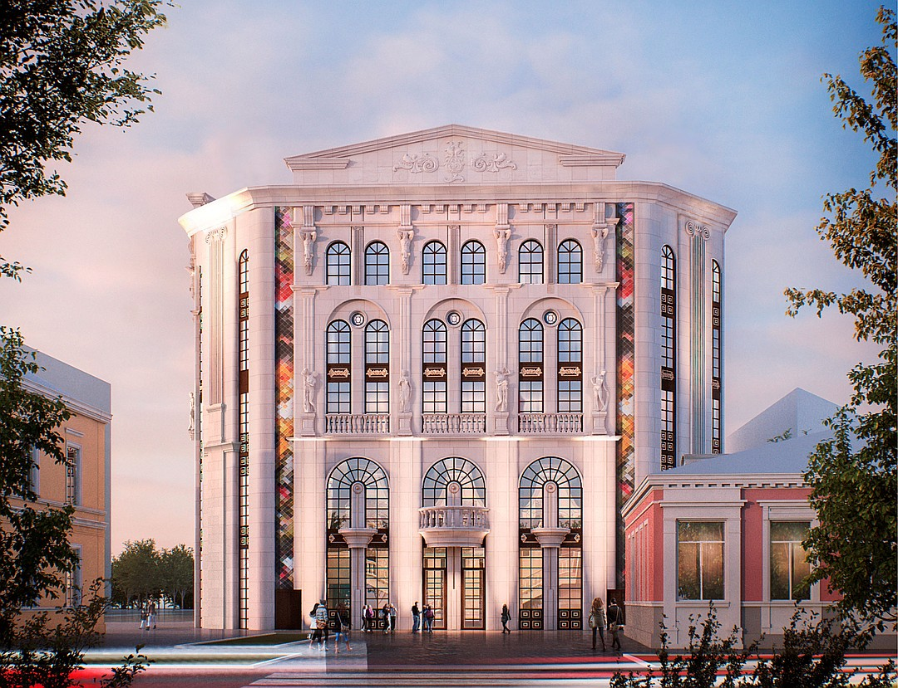

Крымский кукольный театр
Официальный сайт: puppet-theatre.ru
|  |
История театраКрымский академический театр кукол создан в 1938 году. С тех пор на сцене театра были поставлены сотни спектаклей, не только для детей, но и для взрослых.Особый творческий период театра связан с именем известного крымского писателя Владимира Орлова. И сегодня можно сходить на спектакль, написанный Орловым, - "Цветное молоко". В данное время здание театра строят заново, поэтому спектали проходят на малой сцене Русского театра На картинке можно увидеть не фото, а проект нового здания театра, который данный момент все еще строится. |
Адрес (будущего театра)
Симферополь, ул. Горького, 9